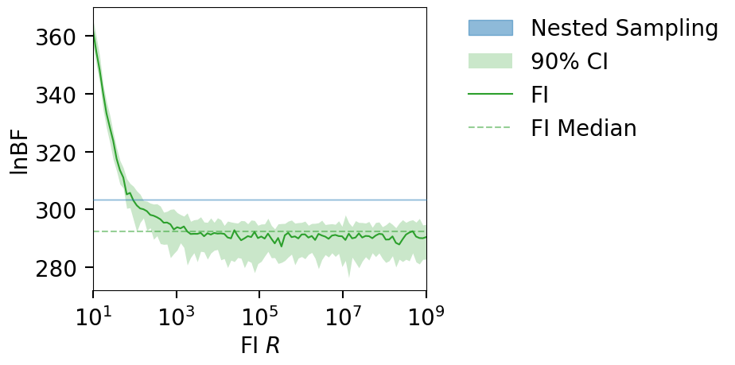
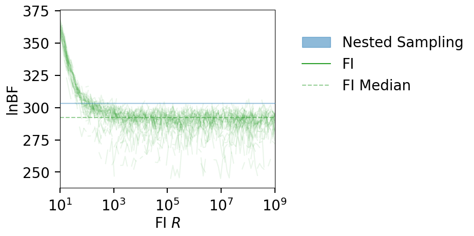

EX3: GW150914#
In this example we load an LVK posterior from zenodo and compute the FI evidence for the CBC model.
Download posteriors from zenodo
%load_ext autoreload
%autoreload 2
%matplotlib inline
The autoreload extension is already loaded. To reload it, use:
%reload_ext autoreload
import h5py
import numpy as np
import pandas as pd
from collections import namedtuple
from funnel.plotting import plot_fi_evidence_results
from funnel.fi_core import get_fi_lnz_list
import shutil, os
np.random.seed(42)
Load GW150914 posterior + Nested Sampling LnZ#
# load the LVK posterior
FPATH = 'IGWN-GWTC2p1-v2-GW150914_095045_PEDataRelease_mixed_cosmo.h5'
LVK_data = namedtuple("LVK_data", "posterior, lnz, lnz_err, lnBF")
def load_lvk_data(fpath):
with h5py.File(fpath, 'r') as f:
sampling_params = list(f['C01:IMRPhenomXPHM/priors/analytic'].keys())
sampler_data = f['C01:IMRPhenomXPHM/meta_data/sampler']
lnz, lnz_err = sampler_data['ln_evidence'][0], sampler_data['ln_evidence_error'][0]
lnBF = sampler_data['ln_bayes_factor'][0]
post = f['C01:IMRPhenomXPHM']['posterior_samples'][()]
post = pd.DataFrame({name: post[name][:] for name in post.dtype.names})
post = post[sampling_params + ['log_likelihood', 'log_prior']]
# only keep parameters with more than one unique value (ie drop deltas)
post = post.loc[:, post.nunique() > 1]
return LVK_data(post, lnz, lnz_err, lnBF)
GW150914_data = load_lvk_data(FPATH)
print(f"LnZ: {GW150914_data.lnz:.2f} +/- {GW150914_data.lnz_err:.2f}")
print(f"LnBF: {GW150914_data.lnBF}")
GW150914_data.posterior.head()
LnZ: -6984.67 +/- 0.14
LnBFL: 303.45
| a_1 | a_2 | azimuth | chirp_mass | geocent_time | luminosity_distance | mass_1 | mass_2 | mass_ratio | phase | ... | recalib_L1_phase_7 | recalib_L1_phase_8 | recalib_L1_phase_9 | theta_jn | tilt_1 | tilt_2 | time_jitter | zenith | log_likelihood | log_prior | |
|---|---|---|---|---|---|---|---|---|---|---|---|---|---|---|---|---|---|---|---|---|---|
| 0 | 0.924210 | 0.331092 | 3.278707 | 29.180724 | 1.126259e+09 | 323.733223 | 37.815124 | 29.796750 | 0.787959 | 3.840744 | ... | 0.007216 | -0.008044 | 0.012153 | 2.775318 | 1.913304 | 1.676054 | 0.000228 | 2.326161 | 322.304271 | 76.937960 |
| 1 | 0.647369 | 0.313305 | 2.602855 | 29.953047 | 1.126259e+09 | 510.955362 | 37.032017 | 32.002137 | 0.864175 | 4.337254 | ... | -0.003571 | 0.001302 | -0.007935 | 2.660558 | 1.841044 | 1.839976 | 0.000325 | 2.334247 | 320.301483 | 78.620833 |
| 2 | 0.205678 | 0.875008 | 2.715020 | 31.433890 | 1.126259e+09 | 500.928555 | 39.143076 | 33.351053 | 0.852029 | 1.757881 | ... | 0.002202 | 0.005764 | -0.002742 | 2.493798 | 2.365895 | 1.369656 | 0.000120 | 2.345314 | 320.654009 | 76.031577 |
| 3 | 0.711251 | 0.004800 | 2.380721 | 30.741031 | 1.126259e+09 | 578.011396 | 35.664826 | 34.963693 | 0.980341 | 4.723087 | ... | -0.009888 | 0.005924 | 0.010894 | 2.967835 | 1.672429 | 0.627161 | -0.000270 | 2.369513 | 324.265661 | 81.326038 |
| 4 | 0.250640 | 0.227152 | 2.783846 | 31.270597 | 1.126259e+09 | 587.119007 | 37.250081 | 34.647430 | 0.930130 | 5.542601 | ... | 0.000942 | -0.014119 | 0.010260 | 3.074509 | 1.373358 | 1.525285 | 0.000435 | 2.339495 | 322.729426 | 62.266597 |
5 rows × 60 columns
NOTE: the log-likelihood column is actually the lnl-noise Lnl (the log-likelihood-ratio).
Compute FI LnZ#
OUTDIR = 'out_GW150914'
CLEAN = True
if os.path.exists(OUTDIR) and CLEAN:
shutil.rmtree(OUTDIR)
os.makedirs(OUTDIR, exist_ok=True)
# USING DOWNSAMPLED POSTERIOR SAMPLES AND A FEW REFERENCE POINTS FOR SPEED
N_SAMP = 5000
N_REF_POINTS = 100
post = GW150914_data.posterior.sample(N_SAMP, weights=np.exp(GW150914_data.posterior.log_likelihood))
print(f"Using {100*(len(post)/len(GW150914_data.posterior)):.2f}% of posterior samples, and trying out {N_REF_POINTS} reference points.")
lnzs, r_vals = get_fi_lnz_list(
post,
num_ref_params=N_REF_POINTS,
r_vals=np.geomspace(10, 1e9, 100),
cache_fn=f'{OUTDIR}/lnzs.npz',
)
|funnel|INFO| Calculating FI LnZ with 100 reference points and a posterior of size: (5000, 58)
Using 3.39% of posterior samples, and trying out 100 reference points.
plt_kwgs = dict(lnzs=lnzs, r_vals=r_vals,sampling_lnz=[GW150914_data.lnBF])
fig = plot_fi_evidence_results(**plt_kwgs)
fig.gca().set_ylabel("lnBF");

fig = plot_fi_evidence_results(**plt_kwgs, plot_all_lnzs=True, plt_kwgs=dict(alpha=.1))
fig.gca().set_ylabel("lnBF");
